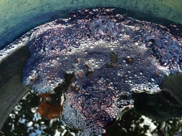

Reprinted with permission from Diane DeSouza's Blog, "Dyeing To Weave"
Last spring, at the invitation of Deborah Chandler, Catharine Ellis and Donna Brown worked with some Mayan women associated with Mayan Hands. The objective was to natural dye cotton with dye extracts. An article by Deborah Chandler with much more detail will be available in an upcoming Handwoven magazine. Yarns dyed in the fall after the workshop had some issues so Donna Brown, Rocio (a natural dyer from Mexico and another translator), and I returned to Rabinal in March, 2014. We got the opportunity to look at the yarns dyed last year at the warehouse in Guatemala City. They looked like this:
The skein on the far right is a cotton skein dyed with the same cochineal bugs in the US so something was wrong. We had them pull the items that were used in the mordant process and discovered that baking soda (sodium bicarbonate) had been used instead of washing soda (sodium carbonate) in the scouring process. Chalk (calcium carbonate) had been used in the mordanting process. We had them go through the whole dye process with the correct ingredients. The end result was this:
The basic process is an alum, washing soda scour. Rinse, Tannin soak (they were using tannic acid). For this they really needed to be careful to keep the yarns covered with water. If they didn’t the tannin oxidized, turned dark, and wouldn’t rinse out. Rinse. Mordant with alum and washing soda. Rinse. They are using unmercerized cotton. We put a couple of mercerized cotton skeins in the pot and they mordanted unevenly. It is not clear why – maybe they needed to be separated from the unmercerized cotton.
Once mordanted, the pots were set up as for normal immersion dyeing. They did have some very nice fuel efficient stoves that really helped this process.
We also started an organic indigo vat with bananas, lime, and indigo. The bananas were heated and once they sunk to the bottom, the juice was strained off and added to the indigo and lime. It was left to sit overnight with several stirrings before we left for the evening and some additional stirrings in the morning. The vat looked like this:
The tannin bath was reused to neutralize the indigo as vinegar is expensive.
We did some overdyes in myrobalan and osage orange. The indigo was done first, then mordanted, then overdyed.
The tannic acid was the most expensive ingredient and we had been told that banana sap contained tannin. The women had used banana trunk to try and extract the sap but the result did not have enough tannin. When the opportunity presented itself, a banana tree was cut down and we looked at and tested the sap for tannin. It turns out it is a good source but has to be collected as soon as the banana trunk is cut. It is not clear how one would work that out to have a consistent source for the tannin. There are additional tannin sources that are possibilities and will be explored on a subsequent trip.
Make sure to check out other posts by Diane on her blog, Dyeing2Weave. Her posts about dyeing with organic indigo are fascinating.